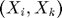
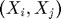
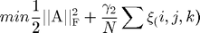
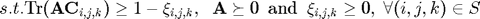

Contents
function [Wx,Wy]=RPSA(X,Ax,Ay,triplet,config)
This function implements relatively-paired space analysis.
- Column of X is an augmented instance, which may come from any modality;
- Ax and Ay are projection matrix so that Wx=W*Ax and Wy=W*Ay;
- Each row of triplet is of the structure (i,j,k), which means distance >= distance ;
- The config contains the parameters and options;
- Wx is the projection mapping for modality x while Wy for modality y;
The enery function minimized


if strcmp(config.method,'SDP') % This option is for the problem with small training triplets fun=@SDPMetricLearning; elseif strcmp(config.method,'cuttingPlane') % This option is for the problem with large scale training triplets fun=@cuttingPlaneMetricLearning; end % Optimize the enery function; [W] = feval(fun, X,triplet,config); % Recover the projection mapping for modality x and modality y; Wx=W*Wx; Wy=W*Wy;
Error using RPSA (line 16) Not enough input arguments.
end